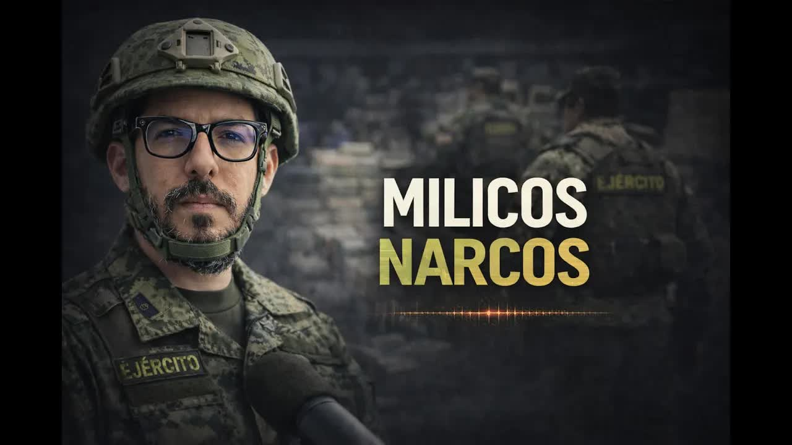
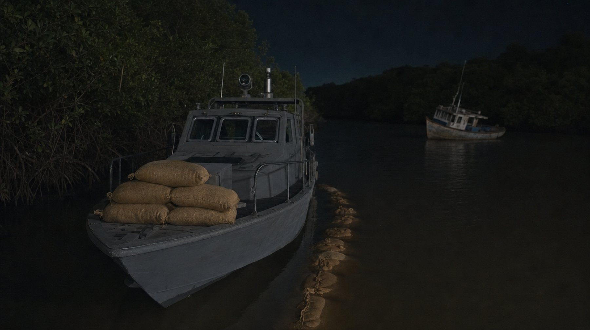
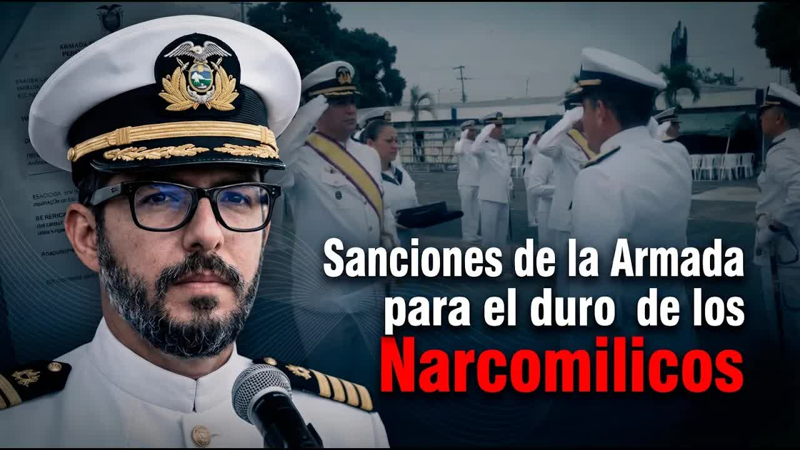
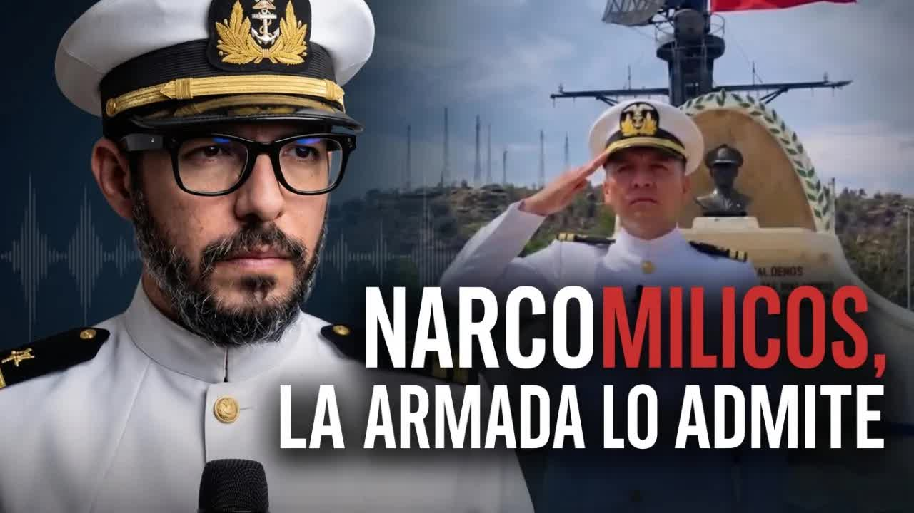

13 feb 2026 · La denuncia: las fuentes, la foto de Gallegos y el audio del reparto
La noche del 22 de enero de 2026 una lancha de la Armada salió hacia la isla La Conchita, en el Golfo de Guayaquil, con cuatro encapuchados a bordo. La Armada reportó cinco sacos de cocaína y pidió un premio para 33 efectivos. Dos de los marinos que participaron le contaron a Andersson Boscán otra historia: eran más de veinte sacos, se llevaron dieciocho para vendérselos a los carteles y después no se repartieron la plata. Un audio de la pelea por el reparto lo probó. La Inspectoría General de la Armada investigó, concluyó que sus marinos simularon un operativo antidrogas y pidió la sanción máxima contra el capitán de fragata que lo comandó.

En los últimos días de enero de 2026 fue noticia pública. Durante un patrullaje fluvial a 40 minutos de Guayaquil, la Fuerza de Tarea 31 Sur halló de noche, en la isla La Conchita, un sector de manglares de difícil acceso, dos embarcaciones cargadas con droga y combustible, presumiblemente usadas para contaminar buques mercantes. En una de ellas, cinco sacos de cocaína, unos 250 kilos. TC Televisión lo reportó; salió en Expreso y en El Universo; la Armada del Ecuador lo publicó como un nuevo e importante decomiso en un país copado por el narcotráfico. Hubo felicitaciones.
Lo raro vino después. Primero contactaron a Andersson Boscán personas del mundo del delito que decían haber hecho un acuerdo con los militares para esa captura; no les hizo caso. Luego le escribieron dos militares: participamos de esa captura de droga, y no fue una captura, fue un robo. Enviaron fotos y videos cortos grabados esa noche, la embarcación, el lugar, el desembarco en La Conchita, y dijeron tener videos más largos para entregar a la justicia.
La historia que contaron era otra. Las Fuerzas Armadas y la Policía tienen informantes dentro de los grupos de delincuencia organizada. Uno de ellos avisó que había casi una tonelada de droga en el agua, en Guayaquil, en un bote atado y cubierto. En lugar de reportarlo a la Policía y a la oficialidad, los oficiales armaron una operación no oficial con recursos del Estado: lanchas, armas y uniformes. Recogieron a la gente en el puente de Portete con dirección a La Conchita. Como era una operación en agua, convocaron a gente de la Armada; como la fuente era del policía, iba el policía antinarcóticos; y por si había que darse bala, gente del crimen organizado. Boscán contó trece personas.
El plan era reportar una parte y quedarse con el resto. No por descuido: porque al mover recursos del Estado tenían que justificar la salida, y si no reportaban nada, cualquiera que hablara los metía presos. Reportaron cinco sacos. Según los participantes, iban a haber más de veinte. Se llevaron dieciocho. A 1.000 o 1.200 dólares el kilo, unos 900.000 dólares; entre doce, unos 90.000 por cabeza. Dijeron que lo hacen más o menos una vez cada tres meses: encontrar un cargamento, llevarse el 70 u 80 por ciento, vendérselo a los traquetos de los carteles y reportar ante la oficialidad, la prensa y la justicia una mínima parte.
No hubo una operación militar, sino una operación clandestina. Los militares decidieron ser narcotraficantes.
Andersson Boscán, 13 de febrero de 2026
Casi una tonelada en el bote; se reportaron cinco sacos y se llevaron dieciocho para revenderlos a los carteles
Según los dos marinos que hablaron con BoscánLo que le tocaba a cada uno; los dos que armaron la operación se quedaron con todo y por eso hablaron
Doce participantes, según las fuentesEntre 1.000 y 1.200 dólares el kilo, vendido a los mismos carteles a los que se lo roban
Precio que manejan los participantesUnos 250 kilos entregados como incautación; la Armada no puede garantizar que sea lo que se encontró
Parte oficial de la Fuerza de Tarea 31 SurSe quedan con el 70 u 80 por ciento del cargamento y reportan una mínima parte; no dan cifras de las anteriores
Los mismos marinos a BoscánLos marinos hablaron por una razón: después de robarse la droga no hubo reparto. Los dos que armaron la operación decidieron quedarse con todo. Uno de ellos es un cabo segundo de la Policía, Franklin Gallegos, el hombre que tenía el contacto con el informante, el que sabía dónde estaba la droga, de quién era y dónde la iban a dejar. Boscán mostró su foto y dijo tener su número de identificación policial. Lo sabe porque sus compañeros lo grabaron: una llamada de entre 15 y 20 minutos, hecha al día siguiente de la operación simulada, en la que un marino le reclama el dinero.

En la grabación, Gallegos pide calma: la droga acaba de entregarse, hay que esperar uno o dos días a que resuelvan los compradores. El marino le explica el problema: la fuente no se la dio al policía, ellos la buscaron; su sargento está quedando mal con el que dio la información; los compañeros de la unidad no han recibido nada. El policía dice que él conoce de quién es esa droga, que anda siempre en eso, que no le gusta el volteo. Hablan de tigueros y de otros grupos a los que responde cada uno. Se amenazan: uno le recuerda al otro que cuando están uniformados se sienten fuertes, pero que en la calle es distinto; el policía advierte que puede conseguir al dueño de la droga y decirle quién se la robó. Y explica por qué eso es una amenaza real: en tierra el narcotráfico está repartido entre mucha gente, pero en agua los dueños se cuentan con los dedos de una mano. En esa zona de Guayaquil, según Boscán, tres grupos controlan el agua y operan con los carteles internacionales.
Si yo no les cuento que son uniformados, parece que fueran traquetos. Esta es la gente que se arrodilla y besa la bandera del Ecuador.
Andersson Boscán, 13 de febrero de 2026
La fuente original, un traqueto junior que era el capitán de la embarcación que sacaba droga todas las semanas desde La Conchita, fue asesinado después de la operación. Boscán dijo que entregaría el audio a la justicia cuando se lo pidieran, y le habló directamente a la Armada: en 24 horas pueden saber quiénes hicieron la operación, quiénes reportaron los cinco sacos, y preguntarles dónde están los otros dieciocho.
Primero lo negaron todos. Un militar apareció encapuchado ante las cámaras para decir que era mentira, que había sido condecorado en ocho ocasiones y que estaba dolido porque un mal ciudadano dañaba su honra. El reportaje lo vieron casi tres millones de personas y el comandante de la Armada reconoció que abrirían una investigación. La Fiscalía allanó dos semanas después de la denuncia. Boscán no esperaba nada. Se equivocó: el 15 de abril de 2026 publicó el informe de la Inspectoría General de la Armada, 75 páginas firmadas por el contraalmirante Carlos López Olivares, inspector general.

La conclusión principal: los marinos simularon un operativo antidrogas. La operación del 22 de enero, ejecutada para supuestamente incautar 250 bloques de droga en el Golfo de Guayaquil, tuvo tal nivel de irregularidades que la institución reconoce que no puede garantizar que la droga entregada a la Fiscalía sea la misma que se encontró, ni que sea la cantidad que realmente encontraron. El informe identifica 14 hechos y recomienda procesos disciplinarios contra 12 militares, con el capitán de fragata Javier Espíndola Vázquez, comandante de batallón, como principal responsable por faltas atentatorias, el nivel más grave del régimen disciplinario militar.
El incumplimiento de los procedimientos para la ejecución de la cadena de custodia y preservación del lugar de los hechos impidió tener la certeza institucional de que se haya respetado la trazabilidad, seguridad y preservación de lo retenido.
Informe de la Inspectoría General de la Armada, leído por Andersson Boscán el 15 de abril de 2026
Los hallazgos. Espíndola embarcó en la lancha militar a cuatro personas vestidas de civil con capuchas, sin orden de operación, sin autorización superior y sin identificación: el informe dice que no existe identificación formal del personal de civil embarcado ni referencias que permitan individualizarlo. Espíndola declaró que eran una fuente humana NN y tres agentes de inteligencia; el informe establece que él no está autorizado para manejar fuentes humanas cerradas ni cumple funciones en el sistema de inteligencia naval. Un solo oficial concentró los roles de comandante del grupo de tarea, de la unidad de tarea, de las lanchas y de la patrulla. Su superior, el comandante del Cuerpo de Infantería de Marina, declaró que no tomó conocimiento de la operación, sino de sus resultados, a las 00:23 del 23 de enero. Operaron fuera de su zona y sin coordinación; el sistema de mando fue WhatsApp. Nadie fotografió, filmó ni preservó la escena.
Y un dato que no se había hecho público: en el lugar del hallazgo había una tercera embarcación civil, parte de la evidencia, que se dejó abandonada porque no podía ser remolcada, sin que se pueda transparentar la totalidad del hallazgo, mientras Espíndola tenía dos lanchas tácticas adicionales estacionadas en el muelle. La operación se planificó con nueve efectivos y una lancha; el parte reportó 17 personas y tres lanchas; la solicitud de encomio solemne, el premio que pidieron por escrito, incluyó a 33 efectivos y cuatro lanchas. Entre los premiados figuraba Freddy Bravo Cuenca, que declaró que no participó, no tenía funciones asignadas y era ayudante del comandante.
La categoría más severa del régimen militar, con al menos once faltas adicionales entre graves y atentatorias. El caso pasó a la Fiscalía por su relevancia penal.
Informe de 75 páginas firmado por el contraalmirante Carlos López Olivares, inspector general de la Armada, publicado por Andersson Boscán el 15 de abril de 2026.
Las recomendaciones del informe. Poner el caso en conocimiento de la Fiscalía, porque lo encontrado tiene relevancia penal y no solo administrativa. Para Espíndola, juicio disciplinario por falta atentatoria, la categoría más severa, con al menos once faltas adicionales entre graves y atentatorias: romper la cadena de custodia, usar fuentes de inteligencia no autorizadas, omitir el briefing, ejecutar una operación sin autorización, operar fuera de la jurisdicción, embarcar civiles sin permiso, no emplear los medios disponibles, ocultar la operación a su superior, reportar tardíamente, falsear el listado de personal y no presentar el informe de cumplimiento. Juicio por falta atentatoria para los seis tripulantes de la lancha, Quimí, Balón, Jiménez, Mejía, Tutivén y Camba, por no cumplir ni exigir la cadena de custodia y no advertir a su comandante el riesgo de dividir la fuerza; la Armada les recuerda que obedecer órdenes no exime de responsabilidad.
Juicio para el jefe de operaciones, Luis Zavala, que firmó la orden, conocía la operación y a las 17:45 del 22 de enero se fue de franco, dejando el puesto de mando a un cabo amanuense sin capacidad de comando. Falta leve para Ramírez y Miranda, jefes de las lanchas de apoyo, por navegar sin luces y desconocer su misión: declararon que solo iban detrás. Juicio para el segundo comandante, Guillermo Ortega, que elaboró la solicitud de encomio con personal que no participó, calificado como faltar a la verdad en asuntos del servicio. Y dos reglas nuevas: toda fuente humana en este tipo de operaciones la manejarán solo las agencias formales de inteligencia, y queda prohibido embarcar personal no identificado.
La Armada hizo llegar el informe a Boscán y lo remitió a la Fiscalía, que según él ya había iniciado un proceso. Los 18 sacos no aparecieron. Los cuatro encapuchados no fueron identificados. El cabo Franklin Gallegos, identificado con nombre, foto y audio el 13 de febrero, no tuvo consecuencia conocida en los videos. Boscán, que en febrero decía que las instituciones se hacen las que no ven, cerró en abril con otra frase: a veces, solo a veces, una institución en lugar de proteger a los narcos los pone en interrogatorios y los desnuda en un informe.
No están buscando droga para incautarla, están buscando droga para robarla y venderla, venderla además a la competencia.
Andersson Boscán, 15 de abril de 2026
Actualizado el 5 de septiembre de 2026
De noche, hacia la isla La Conchita, en el Golfo de Guayaquil. Espíndola embarca a cuatro encapuchados. A las 17:45 el jefe de operaciones se había ido de franco.
A las 00:23 el comandante del Cuerpo de Infantería de Marina conoce los resultados, no la operación. Ese día se graba la llamada del reparto.
TC Televisión, Expreso y El Universo reportan la incautación; la Armada la publica y se pide un encomio para 33 efectivos.
Boscán publica la historia de los dos marinos, la foto del cabo Gallegos y el audio.
Un militar encapuchado dice que es mentira. El comandante de la Armada anuncia una investigación.
La Fiscalía allana dos semanas después de la denuncia.
La Inspectoría General de la Armada concluye en 75 páginas que el operativo fue simulado.
Boscán publica el informe. La Armada lo remite a la Fiscalía y pide la sanción máxima contra Espíndola.
Capitán de fragata, comandante de batallón. Comandó la operación, embarcó a los cuatro encapuchados y concentró todos los mandos.
Cabo segundo de la Policía. Tenía el contacto con el informante; su voz está en el audio del reparto.
Contraalmirante, inspector general de la Armada. Firmó el informe de 75 páginas.
Jefe de operaciones. Firmó la orden, conocía la operación y se fue de franco horas antes.
Segundo comandante. Elaboró la solicitud de encomio con personal que no participó.
Ayudante del comandante, incluido entre los premiados. Declaró que no participó.
Los seis tripulantes de la lancha que fue a La Conchita.
Jefes de las lanchas de apoyo. Navegaron sin luces y sin conocer la misión.
El comandante reconoció en febrero que abrirían una investigación. La Inspectoría General concluyó que la operación fue simulada, recomendó procesos contra 12 marinos y remitió el caso a la Fiscalía.
Dijo que todo era mentira inventada por el periodista, que había sido condecorado en ocho ocasiones y que estaba dolido por el daño a su honra como padre de dos hijos menores.
Que los cuatro encapuchados eran una fuente humana NN y tres personas que hacían el papel de agentes de inteligencia. El informe establece que no estaba autorizado para manejar fuentes humanas.
No participó en la operación, no tenía funciones asignadas ni guardia; era ayudante del comandante.
No consta respuesta en los videos.

La incautación reportada la noche del 22 de enero de 2026 en la isla La Conchita: cinco sacos, unos 250 kilos. Sin orden de operación, con cuatro civiles encapuchados a bordo y sin identificar.
Los cinco sacos que la Armada entregó como resultado del operativo. La propia institución concluyó después que no puede garantizar que sea la droga que se encontró ni que sea la cantidad real.
El pedido de premio elaborado por el segundo comandante. La operación se planificó con nueve personas y el ayudante del comandante, incluido entre los premiados, declaró que no participó.
Quince minutos en los que un marino le reclama la plata al cabo segundo de policía Franklin Gallegos, el hombre que tenía el contacto con el informante. Es la pieza que probó que no hubo reparto.
Setenta y cinco páginas firmadas por el contraalmirante Carlos López Olivares. Identifica 14 hechos irregulares, concluye que el operativo fue simulado, recomienda procesos contra 12 marinos y pide la sanción máxima contra el capitán de fragata Javier Espíndola Vázquez.
Las fuentes que escribieron a Andersson Boscán y contaron el método: eran más de veinte sacos, se llevaron dieciocho y una operación así se repite cada tres meses. Hablaron porque no se repartieron la plata.
La diligencia que la Fiscalía ejecutó dos semanas después de la denuncia, casi sin prensa. El expediente sigue abierto y recibió el informe de la Armada en abril.
13 feb 2026 · La denuncia: las fuentes, la foto de Gallegos y el audio del reparto
15 abr 2026 · El informe de la Inspectoría General de la Armada
15 abr 2026 · Programa completo con el segmento del caso
10 piezasBoscán y La Moni · 13 feb y 15 abr de 2026
Solo se listan las piezas que aparecen citadas en los programas y en el informe de la Inspectoría General de la Armada. Los nombres del informante asesinado y de los dos marinos que hablaron no se publican.
este reportaje. Durante un patrullaje fluvial a 40 minutos de Guayaquil, las fuerzas armadas a través de la fuerza de tarea 31 Sur halló dos embarcaciones que estaban cargadas con droga y combustible. La operación se llevó a cabo en horas de la noche en la isla Conchita, un sector de difícil acceso, ya que se encuentra en los manglares. Y a través de Trisa práctica, se logró la ubicación de dos embarcaciones presumib…
Leer la transcripción completaHace unas cuantas semanas en este programa, casi dos meses atrás, te conté una historia que generó mucho impacto y que fue en principio negada por sus protagonistas. Como es costumbre, cuando uno investiga a la gente, lo normal es que salgan a decir, "No, yo no fui. Eso que dice ese periodista es mentira." era la historia de los narcomilicos, que es como llamábamos seguro de forma errónea, no son militares a fin de c…
Leer la transcripción completarelato. Muchos volvemos a nacer en ese terremoto. Es cierto, volvimos a nacer. Qué buena forma de ponerlo. Volvimos muchos a nacer. Saludos desde Fondo de Bikini. Manda foto o no o no lo creo. Mía es la científica o la artista. Happy birthday. Mía es la artista. Mía es la artista. Amelí es la la científica y la Fer es la comerciante. Cada uno tiene su su propia definición. Pero sí, Mía es artista y ahora está en gimn…
Leer la transcripción completaTranscripciones de los subtítulos automáticos de cada programa. No están corregidas a mano: sirven para buscar una frase y llegar al minuto exacto del video, no como cita textual literal.
La Fiscalía allana dos semanas después de la denuncia; casi sin prensa.
La Armada pide juicio por falta atentatoria contra Espíndola y remite el informe a la Fiscalía.
Las pruebas del caso Progen que la fiscal guardó en un cajón
2026Una hora y veinte minutos hasta una quebrada de la Vicentina y un expediente lleno de contradicciones
2026Micaela Morales, Wendy Landa, Bryan Soria y el dinero del círculo de Marino
Los videos son los programas originales del canal de Andersson Boscán. Las citas del informe de la Inspectoría General de la Armada se reproducen tal como fueron leídas al aire. Boscán anunció que publicaría el informe completo en sus redes y que entregaría el audio a la justicia cuando se lo pidieran. El informante que dio la ubicación de la droga, capitán de la embarcación que salía cada semana de La Conchita, fue asesinado después de la operación. No se publica su nombre. Los dos marinos que hablaron con Boscán tampoco fueron identificados.